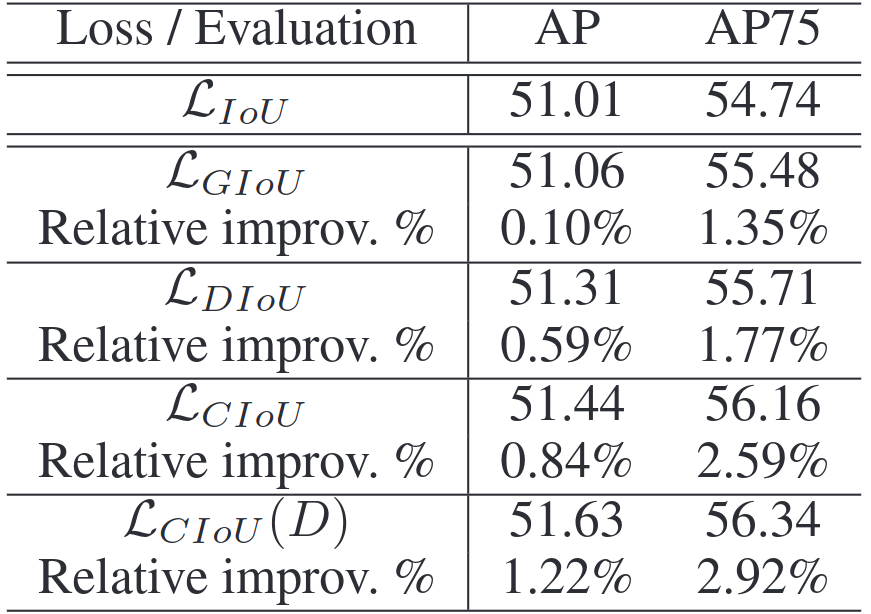

In this post, we will look at the Loss function of YOLOv5.
Table of Contents
Information Theory
-
Information
- If the probability of an event A occurring is P(A), the amount of information for this event is $I=-\log P(A)$.
- Example: Information when a coin lands on heads
- Probability: $ \displaystyle \frac{1}{2}$
- $I=-\log \displaystyle \frac{1}{2}$
-
Entropy
- The expected value of the information.
- $ H(X)=- \displaystyle \sum_{x}P(X) \log P(X)$
- Example: Entropy of a coin flip
- $Entropy= \displaystyle{ -(\frac{1}{2} \times \log \frac{1}{2} + \frac{1}{2} \times \log \frac{1}{2})=-\log \frac{1}{2}}$
-
Kullback–Leibler divergence (KL Divergence)
- Measures the difference between two probability distributions.
- $ D_{KL}(P \Vert Q)= \displaystyle \sum_{x}P(X) \log \frac{P(X)}{Q(X)} $
$ = -\displaystyle \sum_{x}P(X) \log Q(X) +\sum_{x} P(X) \log P(X)$
- The first term is the entropy calculated using distribution Q for data from distribution P.
- The second term is the entropy of the distribution P.
- In other words, KL divergence tells you how much more information you have when using Q to encode P compared to using P itself.
-
Cross Entropy
- The first term of the KL divergence above, i.e. the expected value of information when using distribution Q for data from distribution P, is called the Cross Entropy.
- $ H(P, Q)= -\displaystyle \sum_{x}P(X)\log Q(X) $
- KL divergence can be rearranged as below:
- $ D_{KL}(P \Vert Q)= H(P, Q) - H(P) $
- Here, P is the true distribution, Q is the distribution produced by an approximate model, and H(P) is constant. Therefore, cross-entropy H(P, Q) is often used as a model’s loss when minimizing KL divergence.
Binary Cross Entropy
- Cross Entropy Loss
- In classification, the data label y is given as a one-hot vector, where y is probability distribution P in the formula for cross entropy above.
- The model output $\hat y$ is typically the softmax output probabilities for each class, i.e., distribution Q.
- When N is the number of data samples, y the labels, and C the number of classes, the Cross Entropy Loss L is:
- $ L= - \displaystyle \sum_{n}^{N} \displaystyle \sum_{c}^{C}y_{n, c} \log \hat{y}_{n, c}$
- For example, in a classification problem with ‘dog’, ‘cat’, and ‘frog’:
- $y=\begin{bmatrix} 0 \cr 1 \cr 0 \end{bmatrix} $ (True label)
- $\hat y=\begin{bmatrix} 0.1 \cr 0.7 \cr 0.2 \end{bmatrix} $ (Prediction)
- The cross-entropy loss $l$ for this image is:
- $ l= -\displaystyle \sum_{c}^{C}y_c\log \hat{y}_c$
$=0⋅\log 0.1 + 1⋅\log 0.7 + 0⋅\log 0.2$
$=\log 0.7$
- $ l= -\displaystyle \sum_{c}^{C}y_c\log \hat{y}_c$
- Binary Cross Entropy
- A special case of cross entropy loss when the number of classes is two.
- The model’s output $\hat y$ is usually the probability from a sigmoid function.
- $ L= - \displaystyle \sum_{n}^{N} [y_n\log \hat{y}_n + (1-y_n)\log (1-\hat{y}_n)]$
- BCEWithLogitsLoss
- Torch provides the BCEWithLogitsLoss class, which combines the Sigmoid layer and the Binary Cross Entropy.
- It is more numerically stable than using Sigmoid and BCELoss separately, due to the log-sum-exp trick.
- If x is the input to Sigmoid, y the label, N the number of samples, and w the weight, the unreduced loss L is:
- $ L=\begin{Bmatrix} l_{1}, \cr …, \cr l_{N} \end{Bmatrix}$ where $l_n= - w_n [(y_n\log \sigma (x_n)) + (1-y_n)\log (1-\sigma(x_n))]$
- The reduced loss L is:
- $ L=\begin{cases} mean(L), \text{if reduction=‘mean’} \cr sum(L), \text{if reduction= ‘sum’} \end{cases} $
- With c as the class, you can adjust precision and recall by using a positive weight $p_c$. The formula becomes:
- $ L_c=\begin{Bmatrix} l_{1,c}, \cr …, \cr l_{N, c} \end{Bmatrix}$ where $l_{n, c}= - w_{n,c} [(p_c ⋅ y_{n, c}\log \sigma (x_n)) + (1-y_{n, c})\log (1-\sigma(x_{n, c}))]$
- $p_c>1$ increases recall, $p_c<1$ increases precision.
- If there are 100 positive and 300 negative examples for a class, set $p_c=\frac{300}{100}=3$.
- torch.nn.BCEWithLogitsLoss(
weight=None,size_average=None,reduce=None,reduction=‘mean’,pos_weight=None)size_average,reduceare deprecated parameters.1 2 3 4 5 6target = torch.ones([10, 64], dtype=torch.float32) # 64 classes, batch size = 10 output = torch.full([10, 64], 1.5) # A prediction (logit) pos_weight = torch.ones([64]) # All weights are equal to 1 criterion = torch.nn.BCEWithLogitsLoss(pos_weight=pos_weight) criterion(output, target) # -log(sigmoid(1.5)) # tensor(0.20...)
IoU Loss
-
Intersection over Union (IoU)
- Scale invariant.
- When you have convex A and B, IoU is calculated as follows:
- $ IoU= \displaystyle \frac{|A∩B|}{|A∪B|} $
- $L_{IoU}=1-IoU$
- When IoU is 0, i.e., when the target box and prediction box do not overlap in object detection, IoU does not indicate how large the error is. As a result, the Gradient Vanishing problem occurs.
-
Generalized-IoU (GIoU)
- Generalized Intersection Over Union: A Metric and a Loss for Bounding Box Regression
- If C is the smallest convex that contains A and B, GIoU is calculated as:
- $ GIoU=IoU- \displaystyle \frac{|C \backslash (A∪B)|}{|C|} $
- $ C \backslash (A∪B)$ means set difference.
- $L_{GIoU}=1-GIoU$. The range of loss value is 0~2.
- If the target box contains the prediction box, the penalty term is zero and $L_{GIoU}$ becomes the same as $L_{IoU}$.
Source: Zheng, Zhaohui, et al. “Distance-IoU loss: Faster and better learning for bounding box regression.” Proceedings of the AAAI conference on artificial intelligence. Vol. 34. No. 07. 2020, Figure 2 - Has slow convergence and comparatively low box accuracy.
-
Distance-IoU (DIoU) & Complete IoU (CIoU)
- Distance-IoU Loss: Faster and Better Learning for Bounding Box Regression
- In general, IoU-based loss can be defined as $L_{IoU}=1-IoU + \mathcal{R}(B, B^{gt})$.
- DIoU
- $ \mathcal{R}_{DIoU} = \displaystyle \frac{ρ^2(b, b^{gt})}{c^2}$. ρ is the Euclidean distance between the centers of the two boxes, and c is the diagonal length of the smallest box enclosing both boxes.
Source: Zheng, Zhaohui, et al. “Distance-IoU loss: Faster and better learning for bounding box regression.” Proceedings of the AAAI conference on artificial intelligence. Vol. 34. No. 07. 2020, Figure 5 - $L_{DIoU}=1-IoU + \mathcal{R}_{DIoU}$, range is 0~2.
- Since the distance between boxes is minimized, it converges faster than GIoU loss.
- $ \mathcal{R}_{DIoU} = \displaystyle \frac{ρ^2(b, b^{gt})}{c^2}$. ρ is the Euclidean distance between the centers of the two boxes, and c is the diagonal length of the smallest box enclosing both boxes.
- CIoU
- This is an extension of DIoU to additionally consider the aspect ratio.
- $ \mathcal{R}_{CIoU} = \displaystyle \frac{ρ^2(b, b^{gt})}{c^2} + \alpha v$
- $\alpha = \displaystyle \frac{v}{(1-IoU) + v}$
- Gives higher priority to regression in non-overlapping cases.
- $v = \displaystyle \frac{4}{\pi^2}(arctan\frac{w^{gt}}{h^{gt}} - arctan\frac{w}{h})^2$
- Measures the similarity of aspect ratios.
- $ \displaystyle \frac{4}{\pi^2}$ is to make the maximum calculation result 1 since arctan max is $\frac{\pi}{2}$.
- $\alpha = \displaystyle \frac{v}{(1-IoU) + v}$
- $L_{CIoU}=1-IoU + \mathcal{R}_{CIoU}$
- Non-Maximum Suppression (NMS) using DIoU
- In traditional NMS, the IoU metric is used to remove unnecessary detection boxes.
- Since IoU only considers the overlapping area, incorrect boxes can be suppressed in occlusion situations.
- DIoU considers both the overlapping area and the center point distance between the two boxes, making it more suitable as a criterion for NMS in case of occlusion.
- Let $\mathcal{M}$ be the prediction box with the highest score, $B$ other boxes to apply NMS to, $s$ is the classification score, and $\epsilon$ is the NMS threshold. DIoU-NMS is defined as:
- $ s_i= \begin{cases} \displaystyle s_i, & IoU -\mathcal{R}(\mathcal{M}, B_i) < \epsilon \\ \displaystyle 0, & IoU -\mathcal{R}(\mathcal{M}, B_i) ≥ \epsilon \end{cases} $
- Below is an example using a YOLOv3 model trained on PASCAL VOC07+12, detecting an image from MS COCO 2017.
Source: Zheng, Zhaohui, et al. “Distance-IoU loss: Faster and better learning for bounding box regression.” Proceedings of the AAAI conference on artificial intelligence. Vol. 34. No. 07. 2020, Figure 8
- Experimental Results
- Below are results for training YOLOv3 with $ L_{IoU} $, $ L_{GIoU} $, $ L_{DIoU} $, $ L_{CIoU} $. (D) means IoU-NMS is used during NMS.

Source: Zheng, Zhaohui, et al. “Distance-IoU loss: Faster and better learning for bounding box regression.” Proceedings of the AAAI conference on artificial intelligence. Vol. 34. No. 07. 2020, Table 1 - Below are results for training SSD with $ L_{IoU} $, $ L_{GIoU} $, $ L_{DIoU} $, $ L_{CIoU} $. (D) means IoU-NMS is used during NMS.

Source: Zheng, Zhaohui, et al. “Distance-IoU loss: Faster and better learning for bounding box regression.” Proceedings of the AAAI conference on artificial intelligence. Vol. 34. No. 07. 2020, Table 2 - Below are results for training Faster-RCNN with $ L_{IoU} $, $ L_{GIoU} $, $ L_{DIoU} $, $ L_{CIoU} $. (D) means IoU-NMS is used during NMS.
Source: Zheng, Zhaohui, et al. “Distance-IoU loss: Faster and better learning for bounding box regression.” Proceedings of the AAAI conference on artificial intelligence. Vol. 34. No. 07. 2020, Table 3
- Below are results for training YOLOv3 with $ L_{IoU} $, $ L_{GIoU} $, $ L_{DIoU} $, $ L_{CIoU} $. (D) means IoU-NMS is used during NMS.
YOLOv5 Loss
-
Box Loss
pbox: (number of predictions, number of anchors)iou: (number of predictions)
1 2 3 4 5 6# Regression pxy = pxy.sigmoid() * 2 - 0.5 pwh = (pwh.sigmoid() * 2) ** 2 * anchors[i] pbox = torch.cat((pxy, pwh), 1) # predicted box iou = bbox_iou(pbox, tbox[i], CIoU=True).squeeze() # iou lbox += (1.0 - iou).mean() # iou loss -
Objectness Loss
- The IoU between the target box and prediction box becomes the ground truth (GT).
- Objectness Loss is calculated by applying different weights for each scale.
- $ L_{obj}=4.0 ⋅L_{obj}^{small} +1.0 ⋅ L_{obj}^{medium} +0.4 ⋅ L_{obj}^{large}$
pi[..., 4]: (batch size, number of anchors, number of grids, number of grids) Represents the objectness predicted by the model.tobj: (batch size, number of anchors, number of grids, number of grids) Represents the target objectness for the corresponding batch, anchor, and grid location.
1 2 3 4 5 6 7 8 9 10 11 12# Objectness # BCEobj = nn.BCEWithLogitsLoss(pos_weight=torch.tensor([h['obj_pw']], device=device)) iou = iou.detach().clamp(0).type(tobj.dtype) if self.sort_obj_iou: j = iou.argsort() b, a, gj, gi, iou = b[j], a[j], gj[j], gi[j], iou[j] if self.gr < 1: # default 1.0 iou = (1.0 - self.gr) + self.gr * iou tobj[b, a, gj, gi] = iou # iou ratio obji = self.BCEobj(pi[..., 4], tobj) lobj += obji * self.balance[i] # obj loss -
Classification Loss
t: (number of detections, number of classes)
1 2 3 4 5 6# Classification # BCEcls = nn.BCEWithLogitsLoss(pos_weight=torch.tensor([h['cls_pw']], device=device)) if self.nc > 1: # cls loss (only if multiple classes) t = torch.full_like(pcls, self.cn, device=self.device) # targets t[range(n), tcls[i]] = self.cp lcls += self.BCEcls(pcls, t) # BCE -
Total Loss
- $Loss=\lambda_{box} L_{box} + \lambda_{obj} L_{obj} + \lambda_{cls} L_{cls}$
1 2 3 4 5 6lbox *= self.hyp['box'] lobj *= self.hyp['obj'] lcls *= self.hyp['cls'] bs = tobj.shape[0] # batch size return (lbox + lobj + lcls) * bs, torch.cat((lbox, lobj, lcls)).detach()